D03 — tipologías de apertura (vista interior, técnica)
18 capturas · 1440×900 · claro · continuo = abre hacia el observador, discontinuo = se aleja
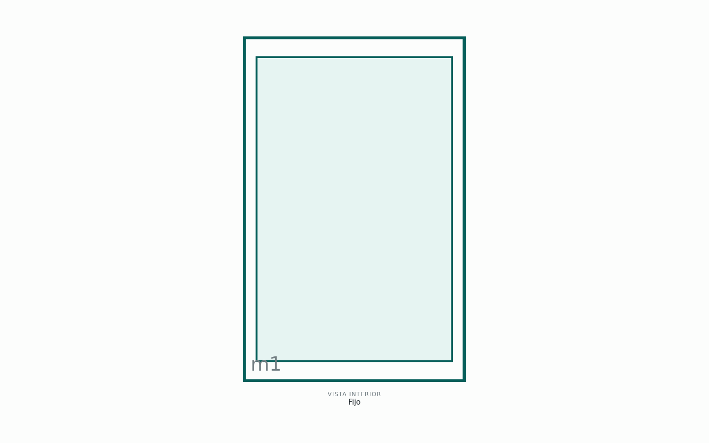
Fijo
Fijo en hoja
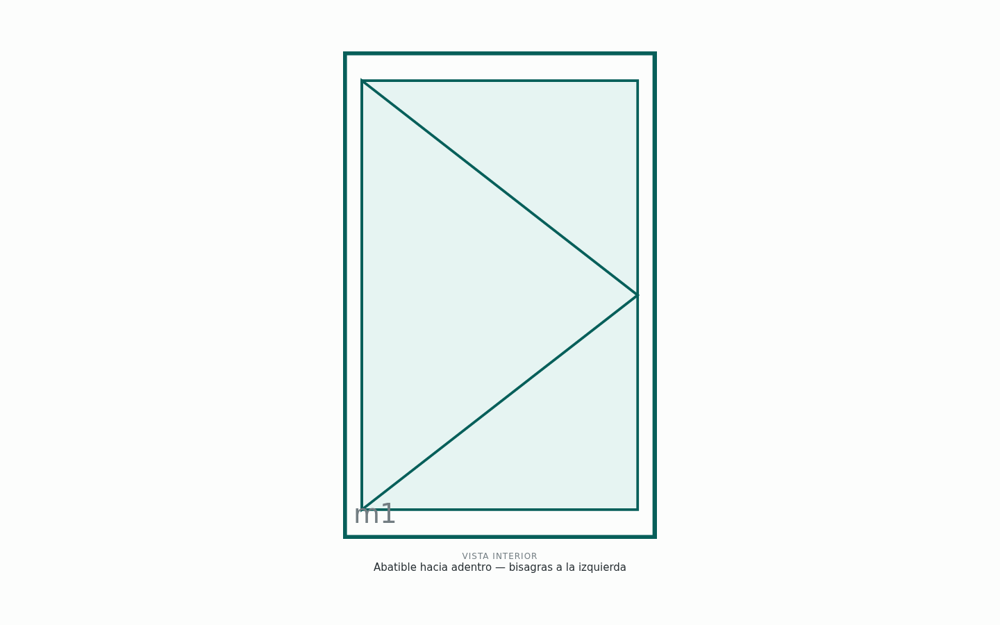
Abatible hacia adentro — bisagras a la izquierda
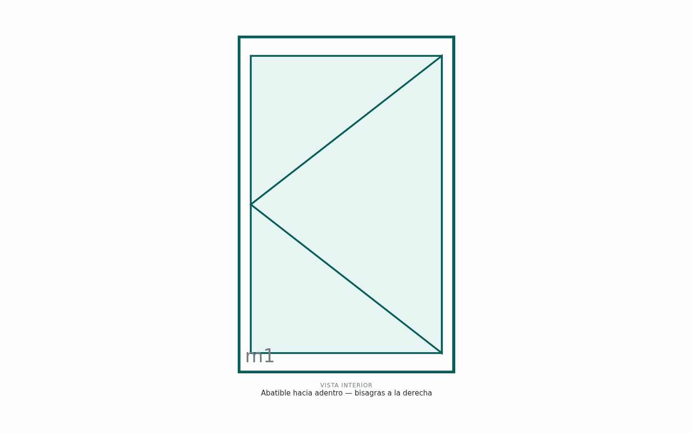
Abatible hacia adentro — bisagras a la derecha
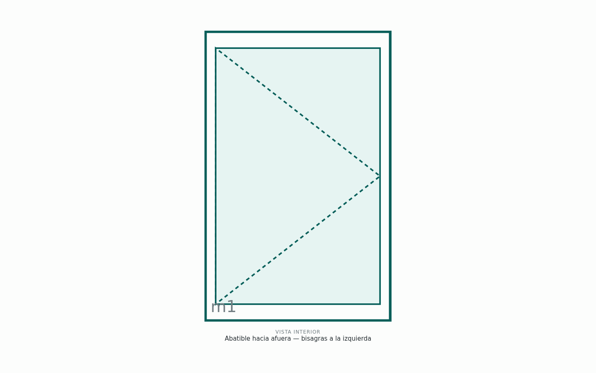
Abatible hacia afuera — bisagras a la izquierda
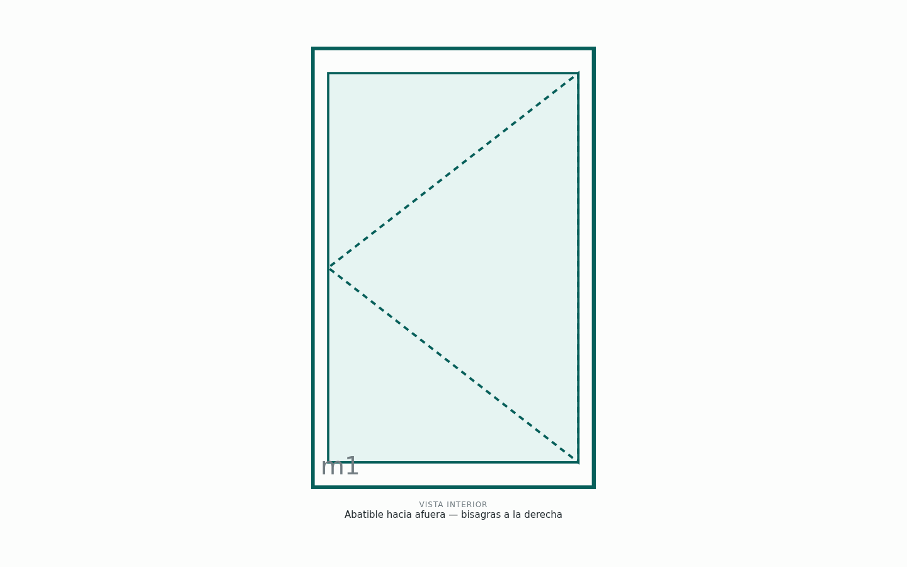
Abatible hacia afuera — bisagras a la derecha
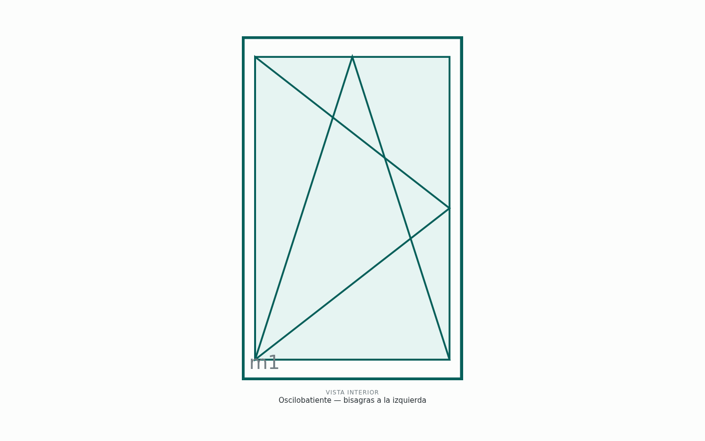
Oscilobatiente — bisagras a la izquierda
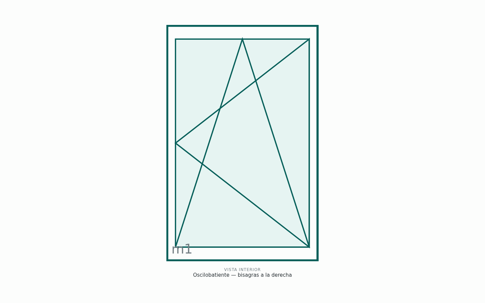
Oscilobatiente — bisagras a la derecha
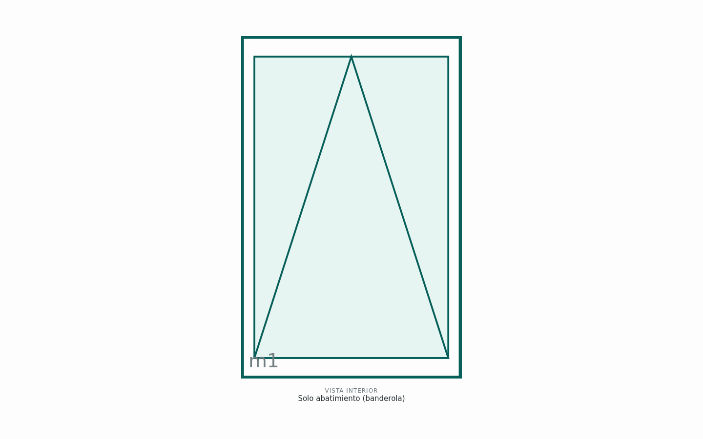
Solo abatimiento (banderola)
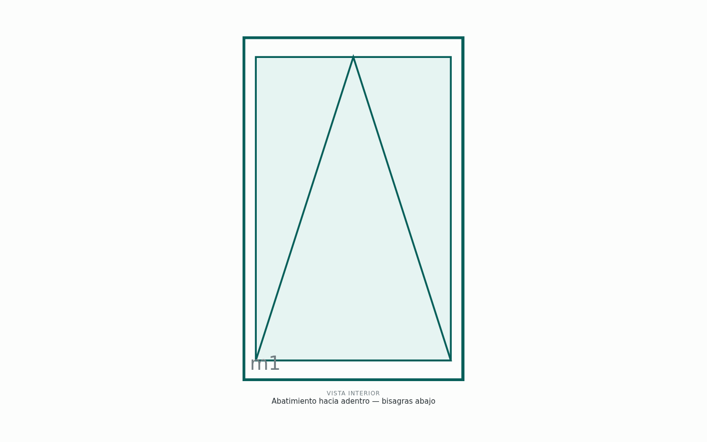
Abatimiento hacia adentro — bisagras abajo
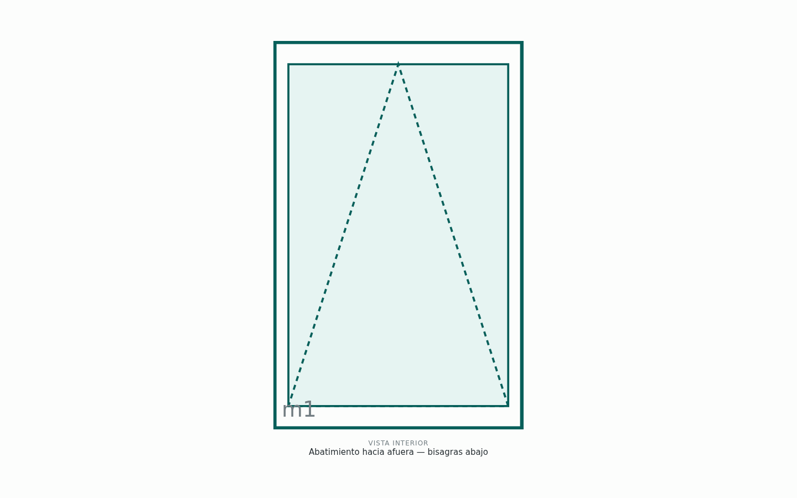
Abatimiento hacia afuera — bisagras abajo
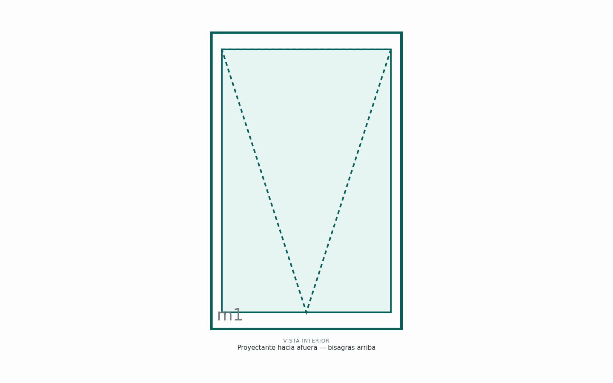
Proyectante hacia afuera — bisagras arriba
Francesa 2 hojas — activa izquierda
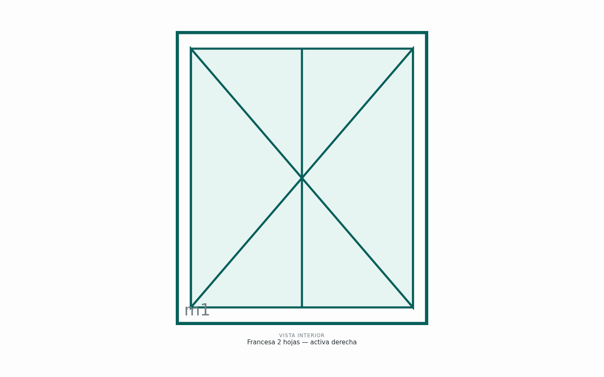
Francesa 2 hojas — activa derecha
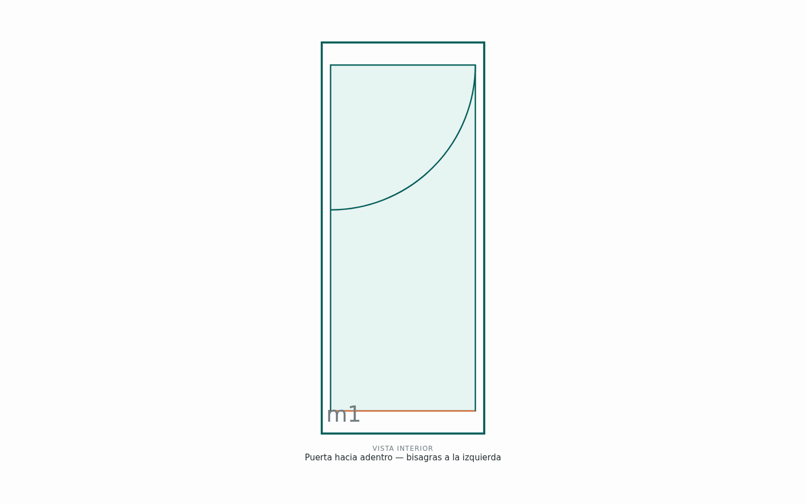
Puerta hacia adentro — bisagras a la izquierda
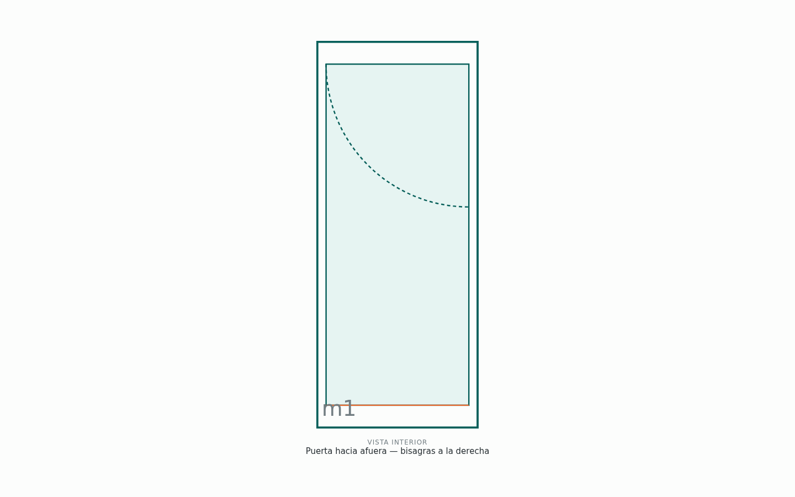
Puerta hacia afuera — bisagras a la derecha
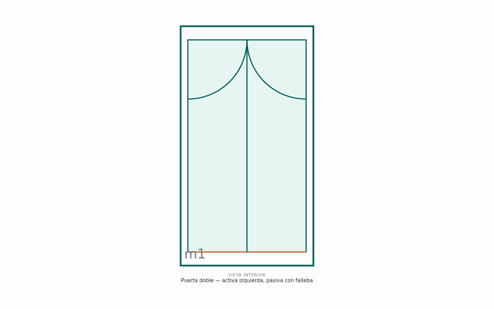
Puerta doble — activa izquierda, pasiva con falleba
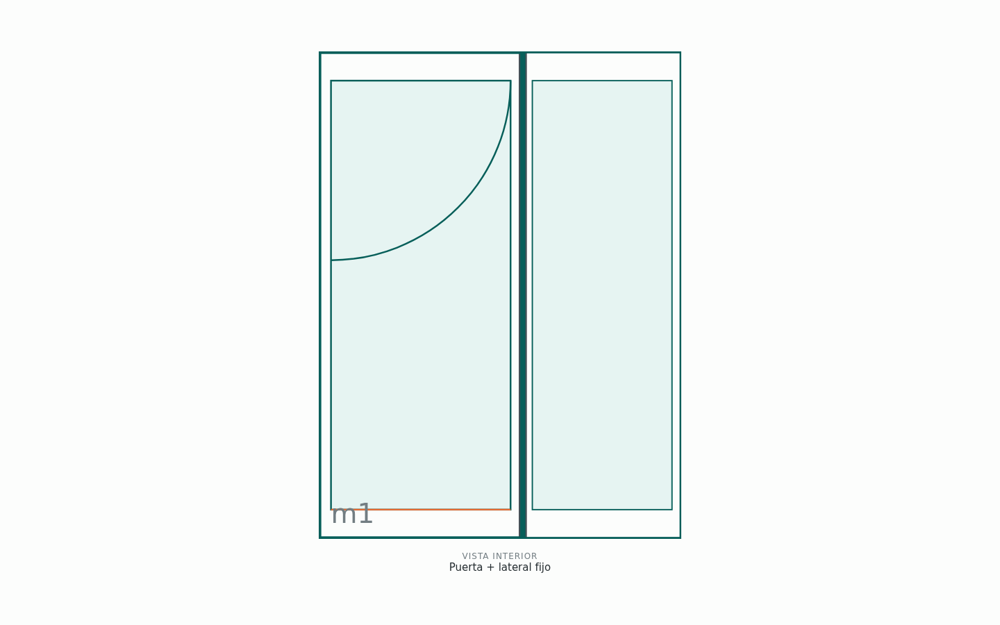
Puerta + lateral fijo